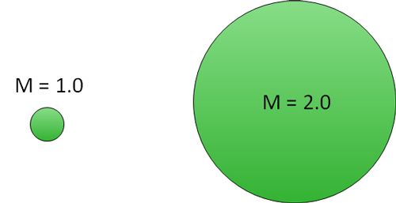
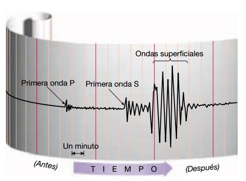

¿Qué es la Magnitud del Momento?
La magnitud de momento (Mw) se introdujo en 1979 por Hanks y Kanamori y, desde entonces, se ha convertido en el método más comúnmente utilizado para describir el tamaño de un microsismo.
La magnitud de momento mide el tamaño de los eventos en términos de la cantidad de energía liberada.
Específicamente, la magnitud de momento se refiere a la cantidad de movimiento por roca (es decir, la distancia del movimiento a lo largo de una falla o fractura) y el área de la falla o superficie de la fractura. Dado que la magnitud de momento puede describir algo físico sobre el evento, los valores calculados pueden ser fácilmente comparados con los valores de magnitud para otros eventos.
La magnitud de momento es también una escala más precisa para describir el tamaño de los eventos.

Ya que las escalas de magnitud son logarítmicas, el incremento de una unidad de magnitud en una escala de magnitud es equivalente a un aumento de 10 veces la amplitud registrada por un sismógrafo y aproximadamente 30 veces la energía. En la imagen superior, el diámetro del círculo es proporcional a la energía de un evento con magnitud de momento +1 en comparación a magnitud de momento +2.
Metodología
El momento sísmico, M 0 , se puede expresar mediante la fórmula M 0 = D A μ donde D es el desplazamiento promedio de la falla, A es el área total de la superficie de la falla y μ es la rigidez promedio (con respecto a las fuerzas cortantes) de las rocas en la falla. M 0 , medido en dinas-cm (1 dinas-cm = 1 × 10 –7 newton-metro), es esencialmente la cantidad de energía liberada por el terremoto. La magnitud del terremoto es un concepto que no tiene sus raíces en un proceso mecánico; es similar al concepto de magnitud estelar en astronomía , ya que se usa para comparar un terremoto con otro. La medición del momento sísmico permite el desarrollo de una escala científica más uniforme del tamaño relativo de un terremoto basada en la mecánica clásica , llamada magnitud de momento ( M W ). M W se puede determinar utilizando la siguiente fórmula: Obtenga acceso exclusivo al contenido de nuestra primera edición 1768 con su suscripción. Suscríbete hoy M W = 2 / 3log M 0 - 10,7
Saturación de magnitud
La razón principal por la que la escala de magnitud de momento es el método más confiable para calcular el tamaño relativo de los grandes terremotos es que su proceso de cálculo subyacente evita el problema de la saturación de laf magnitud, ya que se basa en mediciones de la energía total de un terremoto.
La saturación de magnitud es la tendencia de los cálculos de magnitud de un terremoto a agruparse alrededor de ciertos umbrales numéricos en una escala logarítmica , y puede ocurrir cuando se utilizan medidas de magnitud de terremoto que se basan en medir la amplitud máxima de las ondas sísmicas más grandes en un evento de terremoto dado